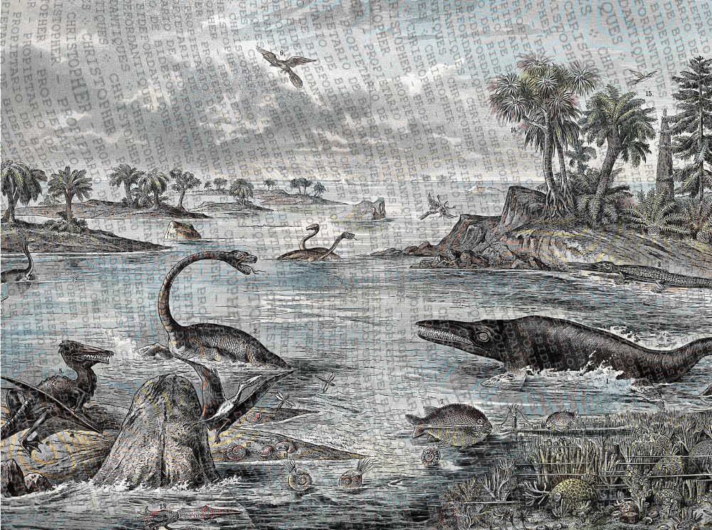
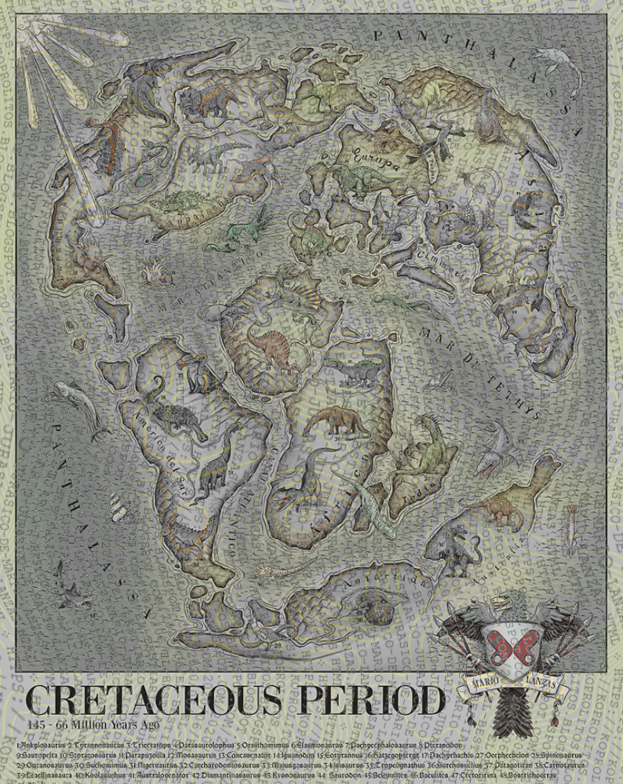

Un fósil es cualquier evidencia física de un organismo que vivió en el pasado geológico. Puede tratarse de huesos, conchas, dientes, improntas (huellas, rastros) o incluso restos de actividad biológica, como excrementos fosilizados (coprolitos). Lo esencial es que estas evidencias hayan sido preservadas en las rocas o sedimentos, gracias a procesos naturales (por ejemplo, la mineralización) que ocurren a lo largo de millones de años.
El estudio de los fósiles (paleontología) no solo se centra en identificarlos, sino también en comprender cómo vivieron y cómo eran los ambientes en los que se desarrollaron. A través de los fósiles, los científicos pueden reconstruir ecosistemas antiguos, establecer líneas de parentesco entre especies y entender la historia de la vida en la Tierra.
William Buckland fue un geólogo y paleontólogo británico pionero, reconocido por describir científicamente al Megalosaurus en 1824, convirtiéndose en la primera descripción formal de un dinosaurio. Este trabajo supuso un hito en la ciencia, pues sentó las bases para estudios posteriores sobre grandes reptiles extintos. Además de sus aportes a la paleontología, Buckland ejerció como profesor de geología en la Universidad de Oxford y fue un gran divulgador de los avances científicos de la época, ayudando a popularizar y a consolidar la investigación de los fósiles como pieza clave para entender la historia natural.
William Buckland (1784–1856) fue un geólogo y paleontólogo inglés que describió el primer dinosaurio, el Megalosaurus.
¿Cómo se forman los fósiles?
Los fósiles se forman gracias a un proceso de preservación natural que puede abarcar millones de años. En términos generales, el proceso comienza con la muerte de un organismo (un dinosaurio, un molusco, un pez, etc.). Después de su muerte, el cuerpo puede ser rápidamente cubierto por sedimentos (arena, lodo, cenizas volcánicas u otros materiales). Esta rápida cobertura evita o reduce en gran medida la descomposición completa y la acción de carroñeros. Con el paso del tiempo, los sedimentos se compactan y solidifican hasta convertirse en roca. En ese entorno, los restos orgánicos del organismo pueden sufrir transformaciones químicas y estructurales que dan lugar a diversos tipos de fósiles: desde la permineralización, en la que los poros de los restos se rellenan de minerales, hasta la fosilización completa, donde el material orgánico se ve sustituido por sustancias minerales.
Además de la cobertura por sedimentos y la mineralización, hay otros caminos posibles hacia la fosilización. Por ejemplo, el molde se produce cuando el cuerpo deja su huella en el sedimento pero el material orgánico se destruye, quedando una “impronta” de la forma original. Un contramolde ocurre cuando esa cavidad (el molde) se rellena con otros sedimentos o minerales, generando una réplica sólida de la forma del organismo. También existen fósiles traza, que no son restos directos del cuerpo, sino indicios de la actividad biológica, como huellas de pisadas, madrigueras o excrementos fosilizados (coprolitos). Cada una de estas variantes proporciona pistas valiosas sobre la vida del pasado.
Debajo se aprecia una ilustración realizada en 1878 que recrea un paisaje típico del Periodo Jurásico en Europa. En primer plano, se observa una costa poco profunda, con vegetación exuberante formada por helechos arborescentes y coníferas primitivas, características de un clima cálido y húmedo de esa época.

Paisaje realizado en 1878 del periodo Jurásico en Europa, representa 17 tipos de seres vivos del pasado.
¿Dónde se encuentran los fósiles?
Los fósiles suelen hallarse principalmente en formaciones rocosas sedimentarias como areniscas, calizas o lutitas, pues estas capas de sedimento se formaron y compactaron a lo largo de millones de años, atrapando los restos de organismos y propiciando su conservación. En algunos casos, también pueden encontrarse en ámbar (resina fosilizada) y en regiones de permafrost, donde el frío actúa como un agente protector que retrasa la descomposición. Su presencia depende en gran parte de la existencia de rocas de la época adecuada, de la ausencia de procesos geológicos muy destructivos (como volcanismo intenso o fuertes plegamientos tectónicos) y del grado de exploración científica de la zona.
En la imagen que se menciona, se presenta un mapa del mundo del siglo XIX correspondiente al periodo Cretácico, en el que se aprecian los grandes continentes con una configuración diferente a la actual y se indican, mediante ilustraciones o etiquetas, los dinosaurios que supuestamente habitaban cada territorio. En América del Norte se destacan grandes terópodos y dinosaurios con pico de pato; en Europa se muestran iguanodontes y carnívoros de menor envergadura; en partes de África y Asia figuran grandes saurópodos de cuello largo y carnívoros de considerable tamaño; y en Sudamérica se representan enormes herbívoros acompañados de grandes depredadores.

Mapa construido en el siglo XIX que muestra el mundo y sus continentes en el periodo Cretácico así como los seres que habitaban en ellos.
¿Que tipos de fósiles existen?
Los fósiles se dividen principalmente en fósiles corporales, fósiles traza, moldes y contramoldes, y pseudofósiles. Los fósiles corporales son los restos directos de seres vivos (huesos, conchas, troncos, hojas) y pueden conservarse gracias a procesos como la permineralización (cuando minerales rellenan los poros de la materia orgánica), la petrificación (en la que los minerales reemplazan casi por completo la materia original) o la inclusión en ámbar (como sucede con insectos atrapados en resina fosilizada).
Los fósiles traza no son partes del organismo sino marcas de su actividad, como huellas de pisadas, túneles o excrementos fosilizados (coprolitos), y resultan muy útiles para comprender la conducta y la alimentación de especies extintas. Cuando el cuerpo de un organismo se descompone y deja su forma en la roca, se forma un molde, y si ese hueco se rellena de minerales o sedimento, aparece un contramolde, generando una copia externa o interna del ser vivo.
En cuanto a la ilustración de 1862, muestra con estilo victoriano a grandes animales acuáticos del Mesozoico, como el Ichthyosaurus, de cuerpo hidrodinámico parecido al de un delfín y con enormes ojos, y al Plesiosaurus, identificado por su cuello largo, cabeza pequeña y extremidades aplanadas en forma de aletas que le permitían nadar.
Ilustración de 1862 sobre reptiles prehistóricos británicos.